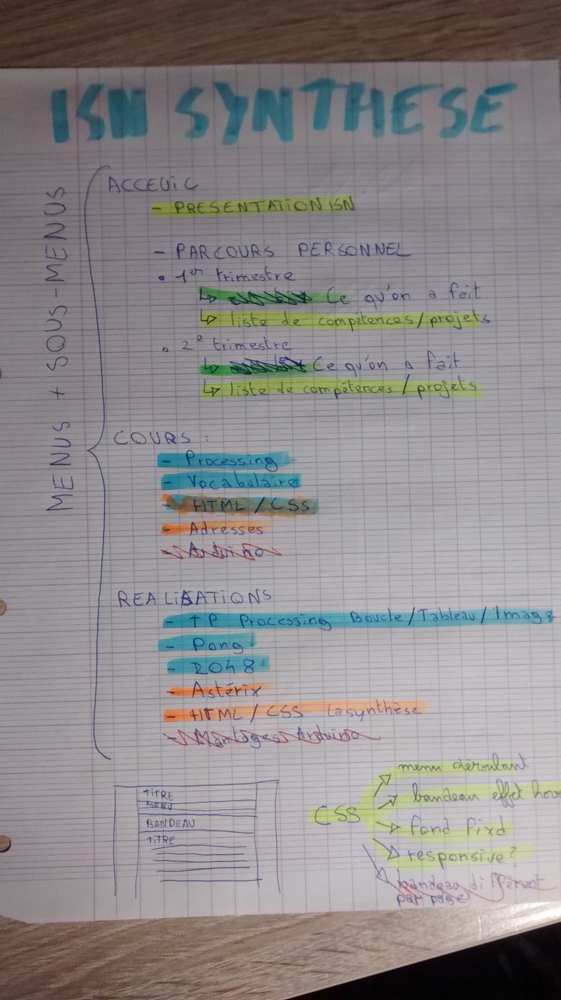

Consigne
La synthèse du deuxième est à rendre sous forme de site internet. Ce dernier doit contenir au moins :
- une synthèse de ce que vous avez appris au cours du trimestre ;
- la présentation des travaux du premier trimestre ;
- la présentation de votre 2048 ou démineur ;
- la présentation de votre animation d'Astérix ;
- une page qui explique la différence entre une adresse relative et une adresse absolue.
Remarque : votre code Processing peut être exporté en javascript pour ensuite être inclus directement dans vos pages.
Investissment Personnel
La première chose que j'ai faite est de prévoir une maquette papier qui me servirait de "guide" au long du projet. Cela me permet de savoir ce qu'il me reste à faire par exemple

J'ai ensuite créé une structure de base en HTML, sans contenu afin de pouvoir commencer à préparer la mise en forme de la synthèse en CSS. Etant donné que la plus part des pages ont la meme forme il suffit alors de les copier/coller et d'en modifier seulement le contenu. J'ai égakement tenu a y rajouter un menu déroulant, entièrement en CSS, puisque que cela donne un aspect ples moderne et également plus pratique à naviguer au site.
Je me suis également servis du gestionnaire des version qu'est Github car il me permet de facilement faire des sauvegardes de mes avancées mais aussi d'en voir les évolutions
Exemple :
HTML du menu présent sur chaque page
<header>
<div>
<h1>ISN - Corentin LUCAS</h1>
<span>Année 2015/2016</span>
</div>
<nav>
<ul id="menu">
<li><a href="../../index.html">ACCUEIL</a></li>
<li><a href="#">COURS</a>
<ul>
<li><a href="../cours/processing.html">Processing</a></li>
<li><a href="../cours/voca.html">Vocabulaire</a></li>
<li><a href="../cours/html.html">HTML5/CSS3</a></li>
<li><a href="../cours/adresse.html">Adresses</a></li>
</ul>
</li>
<li><a href="#">REALISATIONS</a>
<ul>
<li><a href="tppro.html">TP Processing</a></li>
<li><a href="pong.html">Pong</a></li>
<li><a href="2048.html">2048</a></li>
<li><a href="animation.html">Animation</a></li>
<li><a href="site.html">Site HTML</a></li>
</ul>
</li>
</ul>
</nav>
</header>
CSS du menu
/* --- HEADER --- */
header{
background-color: #24476c;
}
h1 {
font-size: 60px;
margin-left: 25px;
text-shadow: 3px 3px #0b151f;
color: #7b7b7b;
margin: 0px;
padding: 0px;
margin-left: 25px;
}
header span{
font-size: 20px;
font-style: italic;
color: #182e45;
margin-left: 25px;
}
/* --NAV-- */
nav{
margin-top: 10px;
background-color: #7b7b7b;
font-size: 20px;
}
#menu, #menu ul {
padding: 5px 0;
margin: 0;
list-style: none;
}
#menu li {
display: inline-block;
padding: 0 2%;
}
#menu ul li {
display: inherit;
}
#menu a {
text-decoration: none;
display: block;
color: #0b151f;
}
#menu ul {
position: absolute;
padding-left: 5px;
display: none;
text-align: left;
z-index: 1000;
}
#menu li:hover > a{
color: #24476c;
text-decoration: underline;
}
#menu li:hover ul {
display: inherit;
background-color: #7b7b7b;
}

Ressentis
Un tel projet n'est pas forcément facile à mettre : il demande beaucoup de temps : à la fois pour son contenu mais aussi pour la mise en page et l'organisation. J'ai du m'y reprendre à 2 fois pour réaliser une arborescence qui me convenait. La mise en page en CSS m'a pris également beaucoup de temps, mais je suis content du résultat. Et je pense avoir remplis toutes les conditions de la consigne.
Toutefois il y a quelques améliorations que j'aurais aimé faire, tout d'abord adapté le site aux terminaux mobiles puisque qu'aujourd'hui plus de la moitié des visites des sites internets sont faites depuis des mobiles. J'aurais également aimé y intégrer directment en javascript les code en Processing, mais je ne suis pas parvenu à utiliser les fichiers fournis, résultant en des programmes non fonctionnels. Finnalment l'aspect du site est également un peu terne et quelques modifications du CSS pourraient être utiles ainsi que de fractionner le style1.css en plusieurs fichiers afin d'en faciliter la mise à jour.